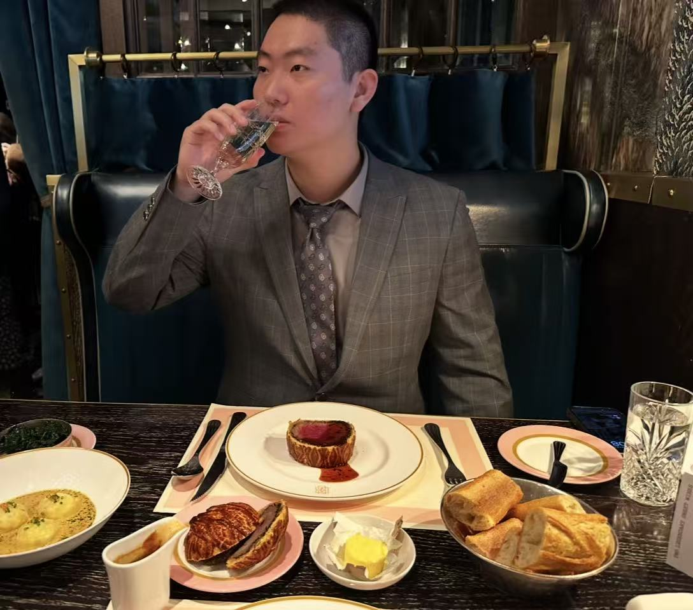
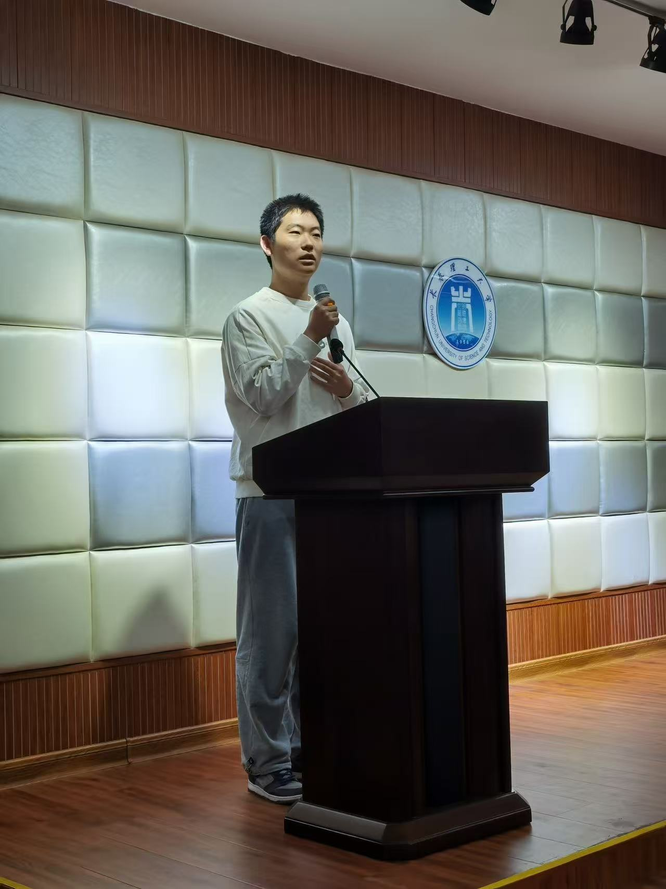
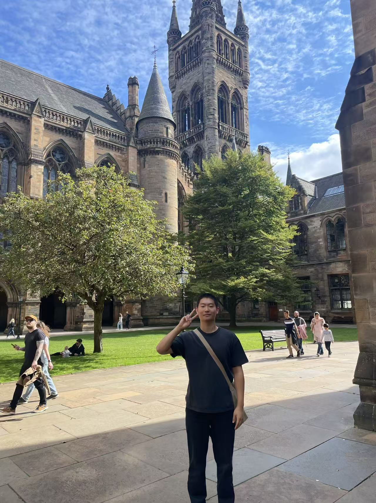
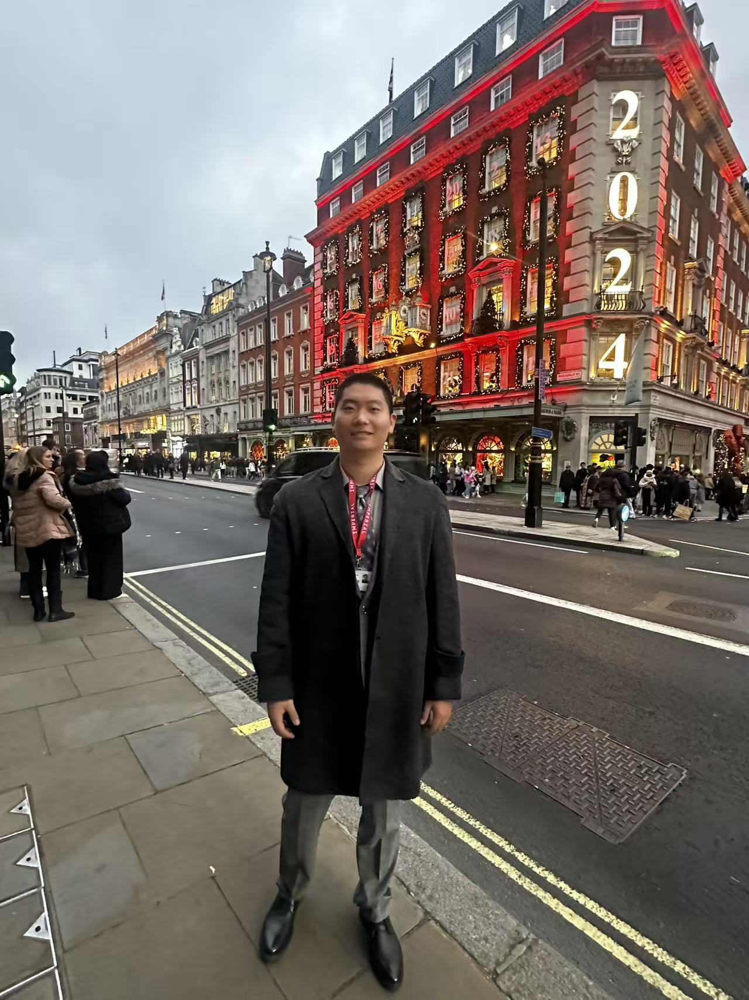
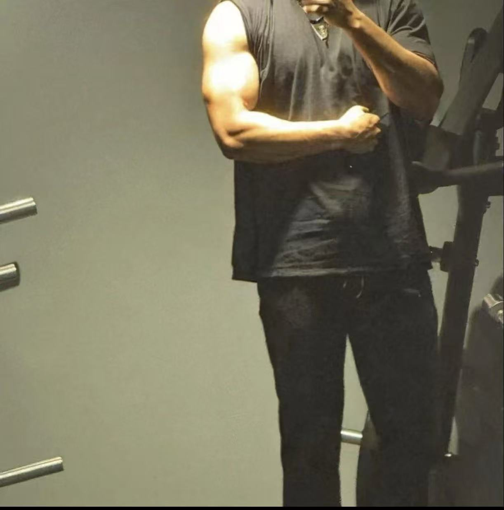

帝国理工学院
Imperial College London
纳米材料、电子结构与光电性质、材料机器学习；结合薄膜制备与表征开展研究。
我是付兴达。我的经历连接材料与光电研究、机器学习，以及金融场景中的 AI 应用。
我喜欢把问题拆解清楚，再把想法做成可以验证的结果。
分层观察玻璃基底与透明薄膜，理解透光与导电的研究目标。
概念动画 · 薄膜厚度放大示意，非真实样品或实测数据。

ABOUT ME / 关于我
在材料实验中，我通过制备和表征理解性能变化；在机器学习中，我比较模型并检查泛化表现；在金融场景中，我尝试让复杂的业务信息变得更清晰。
这些经历让我逐渐形成一种工作习惯：先理解需求，再选择方法，最后用结果验证判断。
Imperial College London
纳米材料、电子结构与光电性质、材料机器学习；结合薄膜制备与表征开展研究。
建立光学、光电器件与工程实践基础，并辅修金融工程。
University of the West of Scotland
结合物理学习、薄膜制备和光电导研究，加深对材料与器件的理解。
MY JOURNEY / 我的学习与生活

长春 / 校园里的我光电信息科学与工程 · 学士
从光学、光电器件和工程实践出发，建立对技术系统的理解，也学习把自己的想法讲清楚。

苏格兰 / 留学生活物理 · 荣誉学士
在物理学习和薄膜实验之外，也走出课堂，感受不同的环境与生活节奏。

伦敦 / 研究生生活高级材料科学与工程 · 硕士
深入透明导电薄膜与材料机器学习，用实验和数据验证判断，继续拓展自己的方向。
本人学习与生活照片。伦敦与苏格兰配图为当地生活记录。
01 / 实习项目
交易信息可能藏在自然语言、截图和表格中。表达不统一，一条消息也可能包含多个指令，增加了信息整理和核对的难度。
我参与图文数据处理与指令解析工作，将 Python 规则、大模型和输出检查结合起来，探索如何把复杂输入转成格式统一、可追溯的信息。
通过样例理解处理思路处理图片文字提取后的错漏、表格错位与多指令混杂，进行文本整理、指令拆分和字段归一化。
图文处理 · 数据整理用 Python 处理确定性信息，让大模型补充复杂语义；合并输出时保护已有结果，减少相互覆盖。
规则解析 · 大模型协作检查字段格式、输出结构与信息来源，结合错误样例分析问题，使结果更便于核对和追踪。
结构校验 · 错误分析确定性规则容易复核，适合格式清晰的内容；大模型可以理解更灵活的表达。分层处理需要同时考虑信息覆盖、调用成本，以及已有结果是否会被覆盖。
我的关注点是：先明确各层负责什么，再检查合并后的结构与来源。涉及公司内部的数据、代码和系统细节不在此页面展示。
图片转文字后，字符混淆、缺字或表格错位可能直接影响字段提取。我会先区分问题发生在识别、数据整理还是语义理解环节，再对相应步骤作调整。
一条消息里的多个对象，可能分别对应不同金额、方向和日期。先整理指令边界，再检查每组字段的对应关系，帮助定位拆分与合并中的错误。
规则层与模型层可能给出不同内容。通过来源追踪、输出结构检查和合并约束，核对信息来自哪里、是否允许补充或覆盖，再分析具体错误。
02 / 互动演示
选择一个场景，再点击右侧字段，查看原文中的对应依据。
点击播放，分步查看当前虚构样例的处理思路；也可以直接选择步骤。
虚构样例，仅演示处理思路。采用预设结果与前端交互，非公司系统或实时模型推理。
03 / 研究经历
从材料特征出发，比较不同模型的表现。
将材料特征用于分类建模，对比传统机器学习与深度神经网络。通过贝叶斯优化调整超参数，并在训练中使用 L2 正则、Batch Normalization、Dropout 与早停。关注训练表现与验证表现之间的差异。
连接制备条件、材料结构与光电性能。
通过脉冲激光沉积制备薄膜，考察沉积温度、氧气条件及 Zn 掺杂方案。将光学透过、电学测量与结构表征结合起来，并对裂纹、附着和均匀性问题进行分析。
从面部视频中，提取微弱的生理信号。
把连续视频帧中的皮肤区域转换为时间序列，再分析与脉搏相关的周期变化。项目中比较颜色通道，关注信号质量及采集条件对结果的影响。
从材料制备，到微弱光电信号的读取。
关注沉积条件和薄膜厚度一致性，结合表面处理、氧敏化和碘敏化探索器件响应，并通过读出电路观察光照变化对应的电信号。
04 / 我的工作方式
从实验室到业务场景，
我希望每一步都有可以检查的依据。
先弄清输入、目标、数据用途和判断标准。
把问题拆成可处理的环节，选择合适的规则、模型或实验方法。
检查具体结果，分析异常与错误，再决定下一步调整。

OFF THE CLOCK / 生活中的我
我喜欢健身，也喜欢网球。生活中，我希望保持真诚和友善；对待答应的事，也会认真负责。
喜欢健身训练，也享受网球对打的乐趣。
愿意倾听与沟通，也在意他人的感受。
把承诺放在心上，把手里的事情做好。